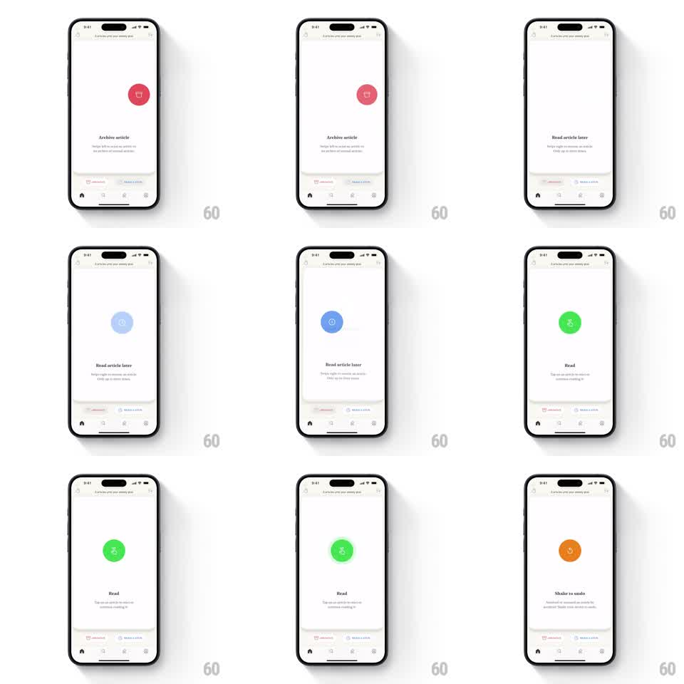

Media
Frame-by-frame

Rebuild this interaction 1:1: Alfread's gesture-onboarding cards - a centered white card cycles through the app's gestures (swipe left to archive, swipe right to read later, tap to read, shake to undo), each with a colored circular icon and caption, sliding horizontally between steps.

Rebuild this interaction 1:1: Alfread's gesture-onboarding cards - a centered white card cycles through the app's gestures (swipe left to archive, swipe right to read later, tap to read, shake to undo), each with a colored circular icon and caption, sliding horizontally between steps.
## Integration
Integration: stack-agnostic spec - springs given as stiffness/damping, timed motions as duration + curve; map every value to your framework and animation library of choice.
## Scene
Light gray app background with a header ("6 articles until your weekly goal") and bottom tab bar. Center stage: one large rounded white card holding a colored circular glyph - red trash ("Archive article"), blue clock ("Read article later"), green check ("Read"), orange undo arrow ("Shake to undo") - with a bold caption and a one-line gesture description under the card. Faded ARCHIVE and READ LATER chips hint at the bottom.
## Motion spec
Pattern: sliding gesture-demo carousel.
- Cards advance horizontally: the outgoing card slides out (translateX -60% with opacity to 0, 250ms, ease-in) while the incoming slides in from the right (translateX 60% to 0, 300ms, ease-out), overlapping slightly.
- The circular icon pops on each card's arrival (scale 0.7 to 1.0, spring stiffness ~340, damping ~20) - the icon is the payload, the card is the envelope.
- Gesture hints animate on their cards: the archive/read-later cards show the card nudging left/right (translateX +-16px and back, 600ms loop with a pause); the shake card rocks (rotation +-6deg, 400ms, twice).
- Captions crossfade with the card swap (150ms).
## Calibration
- One card on stage at a time; this is a tutorial, not a browsable deck.
- The gesture loops run about twice, then hold - infinite looping distracts from the caption.
## Reduced motion
Cards crossfade (200ms); no nudge or rock loops.
## Don't miss
- Icon color carries the meaning: red = destructive (archive), blue = defer (later), green = commit (read), orange = undo. Keep the mapping exact.
- The card mirrors the real article card from the app - same radius and proportions.